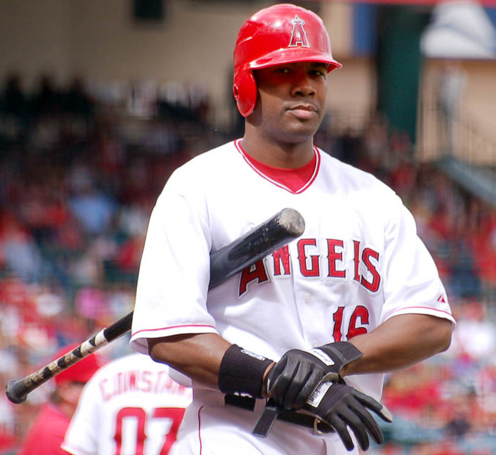

The Angels lost a legend on April 16, 2026. Garret Anderson, the quiet, lethal left-handed hitter who became the most prolific position player in franchise history and delivered the swing that won Anaheim its first and only World Series, has died at his home in Newport Beach, California. He was 53 years old.
The cause of death was acute necrotizing pancreatitis, a sudden and devastating inflammation of the pancreas that gives little warning. Anderson had been living a low-volume retired life in Southern California with his wife Teresa and their three children, the same kind of understated existence that defined his playing days. The news landed across the baseball world with a heavy, uncomfortable weight, partly because of how unexpected it was, partly because Anderson was 53, and partly because for a generation of Angels fans, his number 16 still means everything.
This is not the story of a complicated star. It is the story of a beautifully simple one. Anderson never sought the spotlight, never feuded with the media, never demanded the ball. He showed up, he hit, he stayed in left field, and he did it for fifteen seasons in an Angels uniform. By the time he was done, he held nine of the most important offensive records in franchise history. Most of them are still his today, almost two decades after he stepped out of the batter's box at Angel Stadium for the last time.
The Bases-Loaded Double That Ended 42 Years of Waiting
To understand what Garret Anderson meant to the Los Angeles Angels of Anaheim, you have to start with the bottom of the third inning of Game 7 of the 2002 World Series. Edison Field. The San Francisco Giants leading 1 to 0. Livan Hernandez on the mound. The Angels had loaded the bases against him with one out, and the building was holding its breath because the franchise had never won a championship in 42 years of trying.
Anderson stepped in and laced a three-run double down the right field line that cleared the bases and put the Angels ahead for good. The Angels won that game 4 to 1. They won the World Series. And the most important hit in the history of the franchise had come off Garret Anderson's bat.
He finished fourth in American League MVP voting that year. He hit .306 with 29 home runs and 123 RBIs. He anchored a lineup that punched well above its weight, helped a small-market franchise built on grinders and Rally Monkey magic beat the most feared lineup in baseball, and delivered the single defining moment of his career on the biggest stage the sport offers. He was 30 years old. He was right in the middle of his prime. He was a champion.
Twenty-three Octobers have passed since that night. The Angels have not won another World Series. They have not been back to a Game 7 of any kind. The hit Garret Anderson laced down the right field line is still, by any measure that counts, the most important moment in the history of the franchise.
Home Run Derby Champion and All-Star Game MVP in the Same Week
The summer after the World Series ring, Anderson did something that has only happened a handful of times in modern baseball history. He won the Home Run Derby on Monday night and was named the All-Star Game MVP on Tuesday afternoon. Same All-Star break, same uniform, same week, two pieces of hardware on the mantle.
The 2003 All-Star festivities were held at U.S. Cellular Field in Chicago. The Home Run Derby final came down to Anderson and Albert Pujols. Anderson outslugged the future first-ballot Hall of Famer to take the title, then walked into the All-Star Game the next night and hit a two-run double that helped power the American League to a win that, under the rules of that era, gave the AL home field advantage in the World Series. He took home both trophies in the same week. There is a small, exclusive club of players who have ever pulled that double, and Garret Anderson is in it.
Anderson made three All-Star teams in his career, in 2002, 2003, and 2005. He won two Silver Slugger Awards in 2002 and 2003. The two-year stretch from October 2002 through July 2003 was the peak of his public profile, and it remains one of the most underrated peaks in modern Angels history. He was, for those nine months, the most accomplished hitter on the planet.
A Career Total That Climbs Toward 2,500 Hits
Across 17 major league seasons, Garret Anderson hit .293 with 2,529 hits, 287 home runs, 522 doubles, 1,365 RBIs, and 1,084 runs scored. His 522 career doubles place him in the top fifty all-time. His 2,529 hits put him in the conversation with players who built reputations on hitting and nothing else. He struck out only 1,224 times in roughly 8,640 plate appearances. That is staggering plate discipline for a power hitter who played the bulk of his career in the late steroid era and never tested positive, never had his name in any report, never once had his career numbers shadowed by anything other than a quiet, repeatable, professional swing.
The Angels-Only Numbers Are Where the Legend Lives
The career line is impressive. The Angels-only line is staggering. Anderson holds the franchise records for games played at 2,013, at-bats at 7,989, hits at 2,368, runs at 1,024, RBIs at 1,292, total bases at 3,743, extra-base hits at 796, singles at 1,572, doubles at 489, and grand slams at 8. He hit 272 home runs as a left-handed batter for the Angels, also a franchise record. On August 21, 2007, he drove in ten runs in a single game, the most by any Angel in any game in franchise history. He once recorded an RBI in twelve consecutive games, also a franchise record.
He is the only player in Angels history with at least 2,000 hits, 250 home runs, and 1,000 RBIs in the franchise's uniform. He is the bedrock on which the modern Angels offense was built. Mike Trout, Vladimir Guerrero, Tim Salmon, Bobby Grich, Brian Downing, Don Baylor, none of them touch Anderson's franchise hits total. They are unlikely to touch it for a long time.
No Drama, No Quotes, Just Doubles in the Gap
Anderson was famously, almost frustratingly, low-key. Reporters who covered him in his prime often described a man who answered every question, said exactly what he meant, and then went home. He did not give long quotes. He did not stir clubhouse drama. He did not lobby for honors. He left a bat in the on-deck circle, walked to the plate, and hit a line drive into the gap. Then he did it again the next day. Then he did it again for fifteen years.
Mike Scioscia, the manager who guided Anaheim to the 2002 title, often called Anderson the most predictable hitter he had ever coached, and he meant it as the highest possible compliment. You knew exactly what you were getting from his at-bats. A smooth, looping left-handed swing that produced doubles into right-center, hard ground balls through the right side, occasional moonshots over the right field wall, and almost no panic. Anderson struck out only 78 times in his entire 2003 season. He walked only 31 times that same year. He simply put the ball in play, and most of the time, the ball found grass.
He was also, at six-foot-three with a long lean frame, a dependable left fielder for most of his career. He never won a Gold Glove, partly because his quiet style worked against him in award voting, partly because he never made the spectacular play look spectacular. He just got to the ball, caught it, and threw it back to second base. The metrics liked him. The eye test liked him. He played the corner well.
From Anaheim to Atlanta to Los Angeles, and Then Out
Anderson left Anaheim after the 2008 season as a free agent and signed with the Atlanta Braves on a one-year deal. He hit .268 with 13 home runs in 134 games for the Braves at age 37, played his role in a competent NL East team, and quietly moved on at the end of the season. In 2010, he came back to Southern California for one final season with the Los Angeles Dodgers, hit .181 in 80 games, and retired at the end of the year. He was 38.
It was a quiet exit for a quiet star. He went into a quiet retirement, raised his three children with his wife Teresa, who he had met in junior high school in Granada Hills, and stayed close to the franchise that defined him. The Angels inducted him into their team Hall of Fame in 2016. He took the field at Angel Stadium for a ceremony, said a few words, and then went back to the life he had quietly built away from the cameras.
He had been doing private work in the Newport Beach area, including youth baseball instruction, in the years before his death. Friends described a man who was healthy and active, who looked nothing like a 53-year-old battling a serious illness. The pancreatitis came on quickly. It killed him within days.
A Memorial Patch for the Rest of the Season
The Angels announced Anderson's death on the morning of April 17. They held a moment of silence and played a tribute video before that night's home game against the Texas Rangers. Players stood in a line along the third base side, hats over their hearts, as the videoboard at Angel Stadium ran clips of Anderson's career. The crowd stood and watched in silence. There was no music. There was just a packed ballpark and a slow montage of a man who had given them most of the best years of his life.
The franchise also confirmed that the Angels will wear a memorial patch on their jerseys for the remainder of the 2026 season in Anderson's honor, beginning with the homestand that opened on April 17. The patch is the franchise's way of carrying him through the rest of the year, the same way the Angels carried Tyler Skaggs through 2019. It is the last full-season tribute the team can give a former player, and they gave it to him within 24 hours of his death.
Tributes poured in across the league. Former teammates, former managers, former opponents, current Angels players, all reached for the same word: professional. Anderson was, almost universally, described as the kind of teammate who made everyone around him better simply by showing up the way he did, every day, for fifteen seasons in an Angels uniform.
A Legacy Bigger Than Any Cooperstown Vote
Garret Anderson was not a Hall of Fame player by the strictest Cooperstown standard. He fell off the writers' ballot after one year of eligibility in 2016, the kind of cold treatment Cooperstown often gives to compilers who never had a single transcendent statistical season the voters could point to. He never led the league in a major counting stat. He never won an MVP. He never had a single 7-WAR year. The Hall is rarely kind to the steady, the predictable, the quietly excellent.
But the Hall does not measure what he meant. The Hall does not measure that the most important hit in Angels franchise history came off his bat. It does not measure the seven different franchise records still in his name almost two decades after he played his last game in Anaheim. It does not measure how many young Angels fans grew up wearing number 16 to T-ball games in Orange County in the early 2000s, the same way Detroit kids wore Trammell or San Diego kids wore Gwynn. It does not measure how many current Angels hitters learned, by watching old Anderson video, that you do not need to swing hard to hit the ball hard.
He is survived by his wife Teresa and their three children. He is survived by every Angels fan who watched the bottom of the third inning of Game 7 in 2002 and felt the building shake. He is survived by a generation of teammates who learned how to be a professional hitter just by sharing a clubhouse with him for fifteen seasons in Anaheim. The Angels Hall of Fame will keep his plaque. The franchise record book will keep his name. The 2002 World Series banner will keep flying.
A baseball life, lived quietly. A baseball life, ended too soon. He was 53.